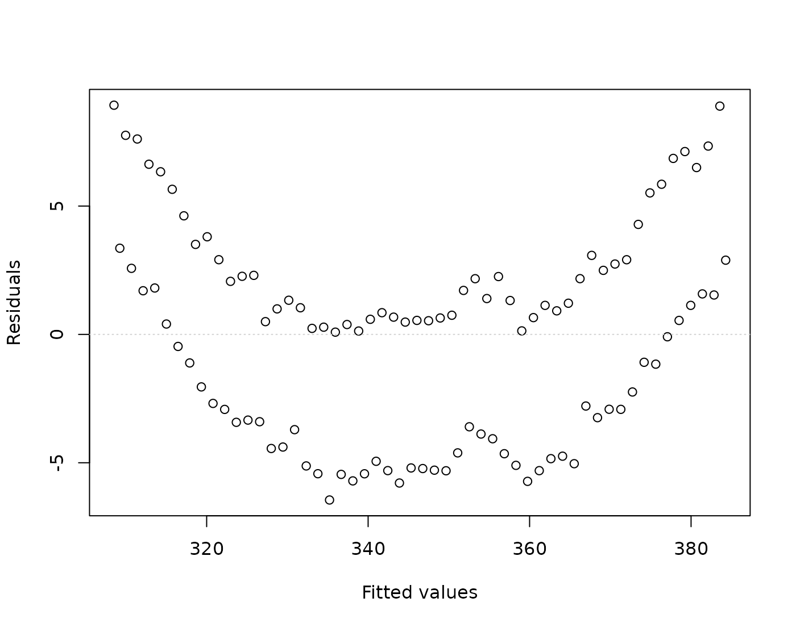
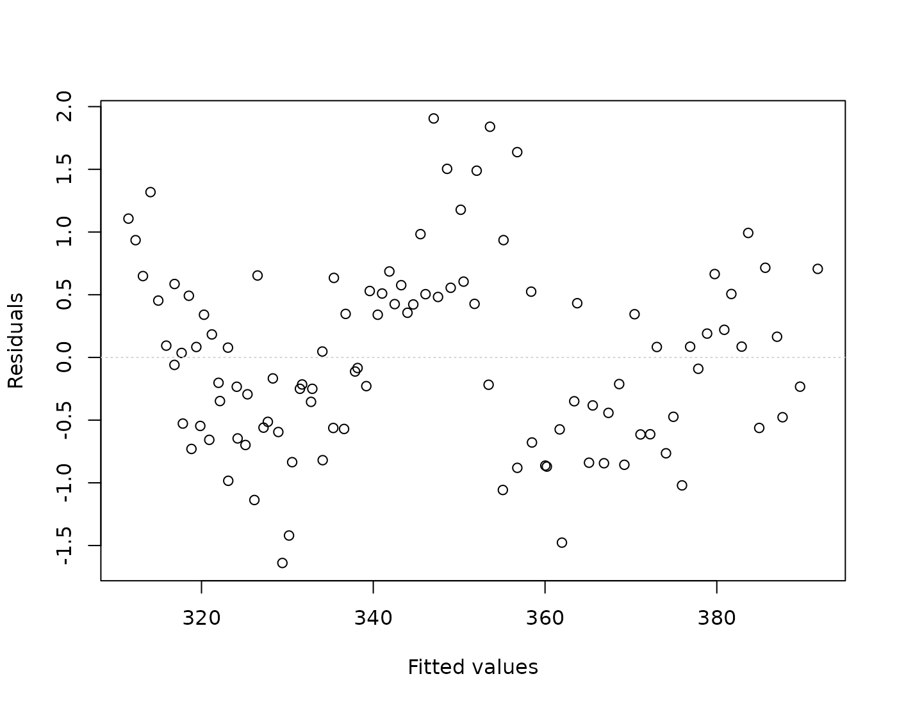
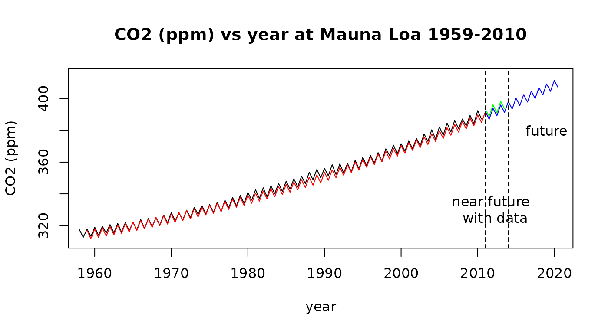

Case Study 9.5: Case study: CO2 Emissions Data from Mauna Loa
Source:vignettes/articles/CS9_5.Rmd
CS9_5.RmdBackground
The carbon dioxide (CO2) content of the atmosphere at the Mauna Loa Observatory on the Big Island of Hawai’i has been measured continuously since 1959 until 2010. Mauna Loa is an excellent site for determining atmospheric CO2 content because of the geographic isolation of the Hawai’ian Islands and because of the high elevation (3400 meters or 11,000 feet above sea level) of the sampling equipment. The site yields high quality, monthly data for the CO2 concentration in the atmosphere of the Northern Hemisphere (see reference below).
We have extracted the values for April and October for each year, corresponding (approximately) to the maximum and minimum concentrations of CO2 in a calendar year. The data show both a cyclic behaviour and an exponential trend. The oscillatory behaviour corresponds to a yearly cycle of increasing atmospheric CO2 from late fall to spring, with a maximum in April, and then decreasing atmospheric CO2 from spring to late fall, with a minimum in October. The simple interpretation is that carbon dioxide is “scrubbed” or removed from the atmosphere of the northern hemisphere during the spring-summer growing cycle, when green plants suck up CO2 during photosynthesis. Carbon dioxide is then released during fall and winter, when plants die and rot.
Data source: C.D. Keeling and T.P. Carbon Dioxide Research Group, Scripps Institution of Oceanography, University of California, La Jolla, California.
Working hypothesis:
We believe CO2 emission are rising and there maybe differences in winter/summer half years.
Rcode
## Loading required package: s20x
ML.df = read.table("ML.txt", header = TRUE)
## some weid stuff happening here
dimnames(ML.df)[[2]][1]## [1] "Year"
# somehow a weird character is being generated for my variable names
# in my importation of these data
dimnames(ML.df)[[2]][1] = "Year"
dimnames(ML.df)[[2]]## [1] "Year" "CO2"
# checks out
## plot this data as a time series
plot(CO2 ~ Year,
data = ML.df, type = "l", main = "CO2 (ppm) vs year at Mauna Loa 1959-2010",
xlab = "year", ylab = "CO2 (ppm)"
)
## Create a factor variable for winter/summer;
WS = rep(c("Winter", "Summer"), rep(nrow(ML.df) / 2))
# get rid of 1958 as this is a large number
ML.df = within(ML.df, {
Yearnew = Year - 1958
Season = WS
})
ML.df[1:5, ]## Year CO2 Season Yearnew
## 1 1958.0 317.45 Winter 0.0
## 2 1958.5 312.60 Summer 0.5
## 3 1959.0 317.72 Winter 1.0
## 4 1959.5 313.26 Summer 1.5
## 5 1960.0 319.02 Winter 2.0
## library(s20x)
## note subtract 1959 from year
ML.fit = lm(CO2 ~ Yearnew, data = ML.df)
eovcheck(ML.fit)
# still got curvature
ML.fit3 = lm(CO2 ~ Yearnew + I(Yearnew^2) + Season, data = ML.df)
eovcheck(ML.fit3)
## Hmm still some signal but this is due to history AKA autocorrelation
## here this check that ther is no interaction between year/season
anova(lm(CO2 ~ (Yearnew + I(Yearnew^2)) * Season, data = ML.df))## Analysis of Variance Table
##
## Response: CO2
## Df Sum Sq Mean Sq F value Pr(>F)
## Yearnew 1 51675 51675 96060.8054 < 2e-16 ***
## I(Yearnew^2) 1 687 687 1277.7406 < 2e-16 ***
## Season 1 885 885 1644.3258 < 2e-16 ***
## Yearnew:Season 1 2 2 3.1480 0.07906 .
## I(Yearnew^2):Season 1 0 0 0.2137 0.64486
## Residuals 100 54 1
## ---
## Signif. codes: 0 '***' 0.001 '**' 0.01 '*' 0.05 '.' 0.1 ' ' 1
# there seems little point in making this more complicated - so go for parallel lines model!
## let's see what it tells us
summary(ML.fit3)##
## Call:
## lm(formula = CO2 ~ Yearnew + I(Yearnew^2) + Season, data = ML.df)
##
## Residuals:
## Min 1Q Median 3Q Max
## -1.63918 -0.56266 -0.07208 0.50541 1.90543
##
## Coefficients:
## Estimate Std. Error t value Pr(>|t|)
## (Intercept) 3.111e+02 2.236e-01 1390.99 <2e-16 ***
## Yearnew 8.076e-01 1.859e-02 43.45 <2e-16 ***
## I(Yearnew^2) 1.217e-02 3.426e-04 35.51 <2e-16 ***
## SeasonWinter 5.778e+00 1.434e-01 40.28 <2e-16 ***
## ---
## Signif. codes: 0 '***' 0.001 '**' 0.01 '*' 0.05 '.' 0.1 ' ' 1
##
## Residual standard error: 0.7383 on 102 degrees of freedom
## Multiple R-squared: 0.999, Adjusted R-squared: 0.9989
## F-statistic: 3.256e+04 on 3 and 102 DF, p-value: < 2.2e-16#Dealing with auto-correlation -discussed later in the course.
Rcode
## This is outside the context of the course.
## A more appropriate way to model this is to model the AR(1) correlation structure.
## You will need to download this libaray from CRAN first: install.packages("nlme")
library(nlme)
ML.fit4 = gls(CO2 ~ Yearnew + I(Yearnew^2) + Season, correlation = corAR1(), data = ML.df)
## compare these
summary(ML.fit4)## Generalized least squares fit by REML
## Model: CO2 ~ Yearnew + I(Yearnew^2) + Season
## Data: ML.df
## AIC BIC logLik
## 197.0076 212.7574 -92.50378
##
## Correlation Structure: AR(1)
## Formula: ~1
## Parameter estimate(s):
## Phi
## 0.750789
##
## Coefficients:
## Value Std.Error t-value p-value
## (Intercept) 311.22608 0.5275547 589.9408 0
## Yearnew 0.79595 0.0462667 17.2034 0
## I(Yearnew^2) 0.01236 0.0008497 14.5512 0
## SeasonWinter 5.77470 0.0583470 98.9718 0
##
## Correlation:
## (Intr) Yearnw I(Y^2)
## Yearnew -0.831
## I(Yearnew^2) 0.693 -0.964
## SeasonWinter -0.065 0.004 0.000
##
## Standardized residuals:
## Min Q1 Med Q3 Max
## -2.0907254 -0.7459209 -0.1161501 0.6388810 2.4425997
##
## Residual standard error: 0.7927843
## Degrees of freedom: 106 total; 102 residual
# litte changes except the standard errors and therefore -t-stats/p-values
## but conclusions remain the same
## predict the future
plot(CO2 ~ Year,
type = "l", data = ML.df, xlim = c(1959, 2020), ylim = c(310, 415),
main = "CO2 (ppm) vs year at Mauna Loa 1959-2010",
xlab = "year", ylab = "CO2 (ppm)"
)
lines(ML.df$Yearnew + 1959, predict(ML.fit4), col = "red")
pred.df = data.frame(
Yearnew = seq(52, by = .5, length = 20),
Season = factor(rep(c("Winter", "Summer"), 10))
)
predictCO2.df = data.frame(
year = seq(2011, 2013.5, by = .5),
CO2 = c(393.34, 388.96, 396.18, 391.01, 398.35, 393.66),
season = rep(c("Winter", "Summer"), 3)
)
lines(predictCO2.df$year, predictCO2.df$CO2, col = "green")
lines(pred.df$Year + 1959, predict(ML.fit4, pred.df), col = "blue")
abline(v = c(2011, 2014), lty = 2)
# observed data & predicted for 2011-2013
predictCO2.df$CO2## [1] 393.34 388.96 396.18 391.01 398.35 393.66
predict(ML.fit4, pred.df)[1:6]## [1] 391.8208 387.0901 393.9149 389.1966 396.0338 391.3278
# scarily closeFormal model
where Winter =1 if it’s winter in the northern hemisphere, otherwise 0 and
Formal Working Hypothesis: and and
Null Hypothesis: , and .
Assumption Checks
We do no have independent observations as this is historical data and the past influences the future. Essentially this means we have less data than we thought as these observations are positively correlated.
EOV seems fin and residuals look looks approximately Normal. There do not now appear to be any unduly influential data points. We can mostly rely on the results from fitting this linear model - although caution is advised.